ESSENTIAL
♡
Umrah Kasih
Asas yang lengkap untuk perjalanan ibadah yang teratur dan selesa.
BermulaRM 6,990
Daripada persediaan hingga pulang ke tanah air, kami mengurus perjalanan anda supaya anda dapat memberi tumpuan kepada ibadah.
Pilih pengalaman yang paling sesuai. Maklumat harga di bawah ialah ruang data dan boleh dikemas kini tanpa mengubah reka bentuk laman.
Asas yang lengkap untuk perjalanan ibadah yang teratur dan selesa.
Lebih dekat, lebih selesa, dengan pengalaman perjalanan yang ditingkatkan.
Pengalaman bertaraf tinggi dengan perhatian lebih pada setiap perincian.
Perjalanan peribadi yang disusun mengikut masa, keluarga dan keperluan anda.
Kami menyusun perjalanan secara menyeluruh supaya pengalaman sebelum, semasa dan selepas Umrah terasa lebih mudah.
Lihat pelepasan akan datang →Panduan dan bimbingan sebelum berangkat.
Penerbangan dan penginapan yang dipilih.
Bimbingan sepanjang berada di Tanah Suci.
Pasukan yang membantu sepanjang perjalanan.
Ruang galeri ini akan menempatkan foto dan video sebenar setiap kumpulan Umrah Kasih.
Program referral untuk mereka yang mahu memperkenalkan Umrah Kasih kepada keluarga, rakan dan komuniti.
Kandungan tepat bergantung pada pakej dan tarikh. Halaman detail pakej akan memaparkan penerbangan, hotel, visa, bimbingan, ziarah dan item yang disertakan.
Pilih pakej dan tarikh, masukkan maklumat jemaah, kemudian teruskan kepada pembayaran deposit apabila modul tempahan diaktifkan.
Ya. Umrah Kasih Private disediakan untuk perjalanan yang memerlukan susunan lebih fleksibel.

Temui pakej yang sesuai untuk anda dan keluarga.
Cari Pakej UmrahHalaman detail penuh akan disambungkan pada fasa seterusnya. Untuk V2 ini, interaksi pakej sudah dipisahkan daripada reka bentuk utama.